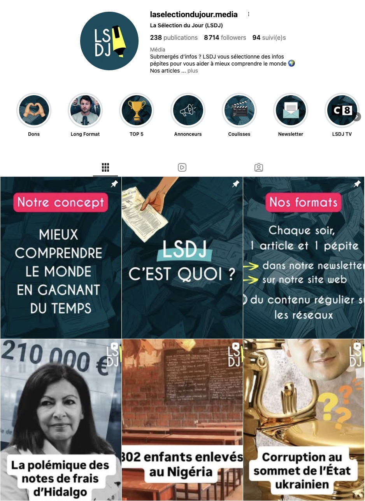
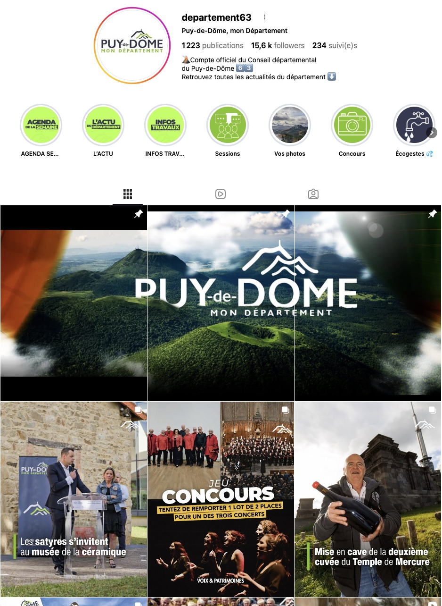
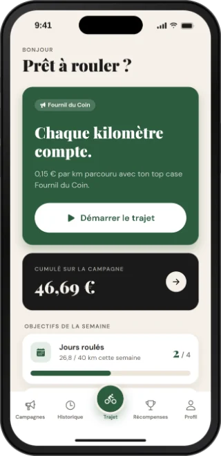
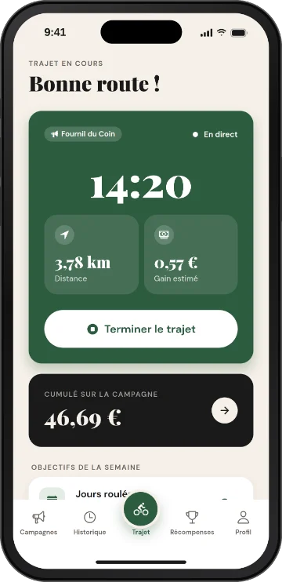
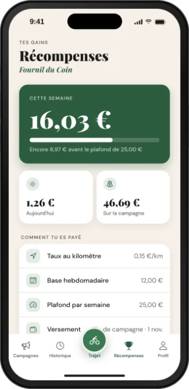

Portfolio
Entrepreneur en communication
Je donne aux idées une forme, une audience et un mouvement.
Communication · Création de contenu · Web · Vidéo · Projets entrepreneuriaux
Voir les projetsÉditorial, visuels, storytelling — du concept à la publication.
Voir le projet LSDJInterfaces épurées, expériences fluides, attention au détail.
Voir le projet Pépinière du Haut-LivradoisMontage, motion, formats courts et longs pour tous canaux.
Voir le projet Clermont Foot 63Applications iOS & Android, de l'idée au pilote terrain.
Voir le projet Beeclou

Coach IA qui structure le mémoire de recherche — et met l'étudiant en lien avec son directeur aux moments clés. Sources peer-reviewed, méthodologie française stricte. Jamais à ta place.
mythese.comCoach méthodologique IA · Pas un rédacteur fantôme
Le coach IA qui structure ton
mémoire de recherche.
Sources peer-reviewed via OpenAlex (250M papers).
Méthodologie française stricte. Jamais à ta place.
👤 Étudiant → IA → 🎓 Directeur de recherche — la validation reste humaine.
Plateforme qui finance le vélo urbain par les trajets quotidiens. Cyclistes récompensés, entreprises visibles, villes engagées dans la mobilité douce.
Application mobile iOS & Android : le cycliste démarre son trajet, suit en direct distance et gains, puis valide sa sortie d'une photo du top case publicitaire.



Jean Echalier, 23 ans, entrepreneur en communication basé à Paris.
Les projets à impact me drive.
Je pars d'une idée et je lui donne une forme, une audience et un mouvement — communication, création de contenu, web, vidéo, entrepreneuriat. La conviction que les belles idées méritent une exécution complète, pas seulement une belle façade.
Un projet ? Une opportunité ?
Je suis ouvert aux projets, collaborations et opportunités professionnelles.